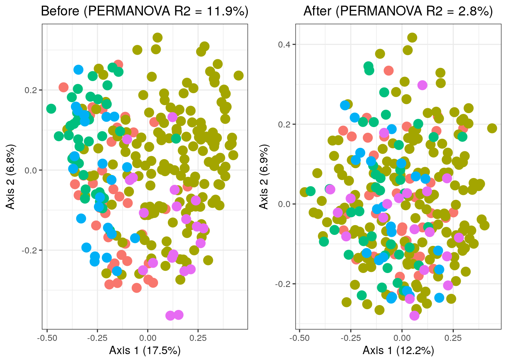
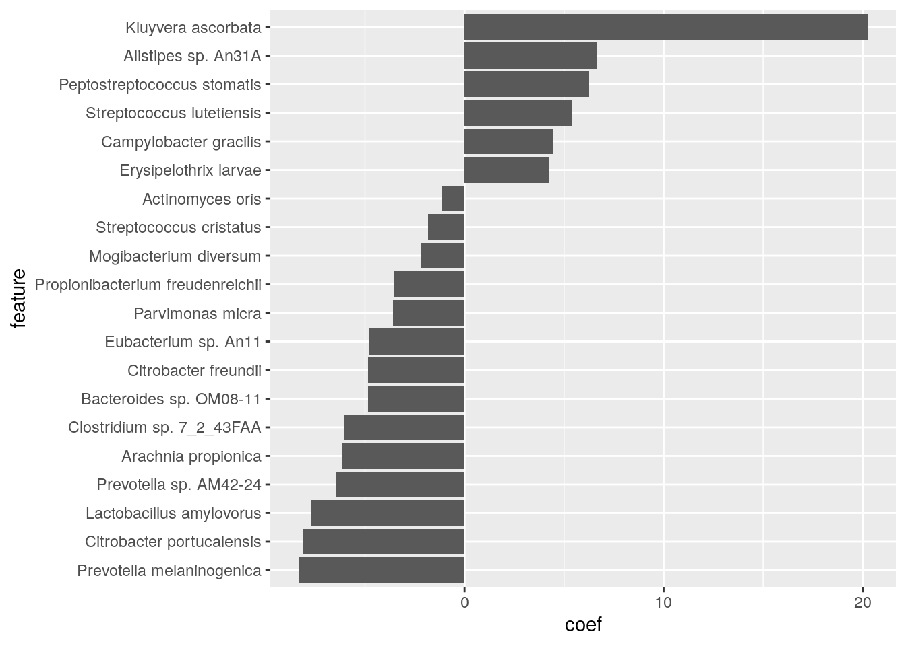
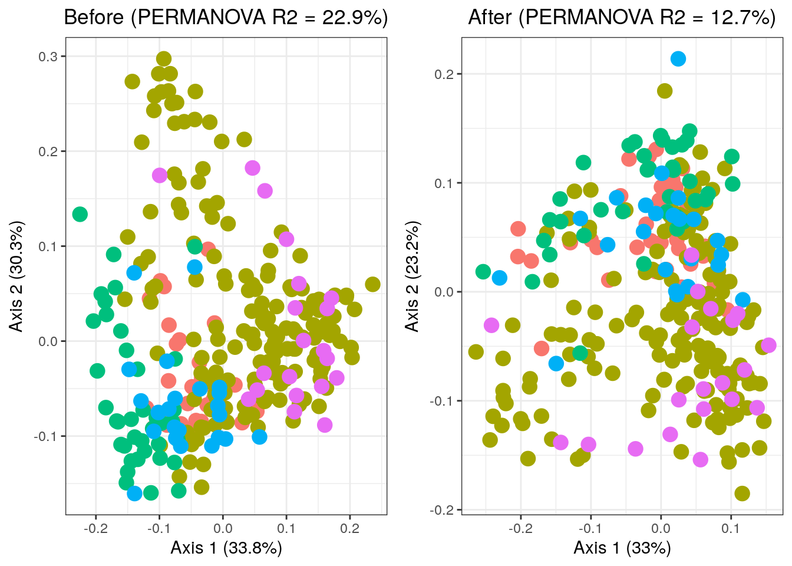
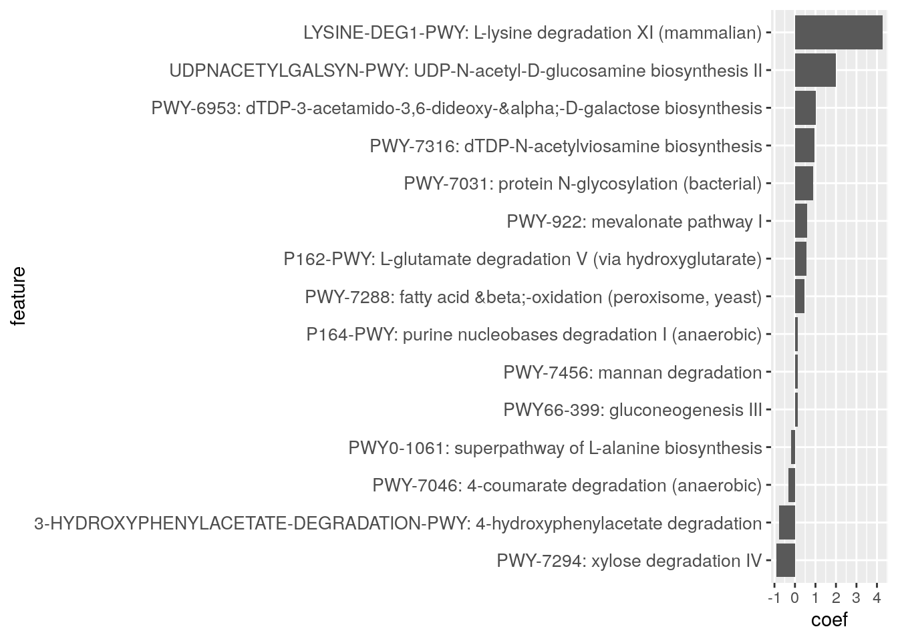

16 Meta-analyses
Meta-analysis is a statistical analysis that combines the results of multiple scientific studies by appropriately weighting the individual study-specific effect sizes I. H (2011). A common meta-analytic combination strategy is to take a weighted average of the study-specific summary measures. In fixed-effects meta-analysis, the weights are based on the assumption that there is a single true parameter underlying all the studies, while in random-effects meta-analysis, the weights are based on a model where the true parameter varies across studies according to a probability distribution.
Meta-analysis is particularly useful when individual studies are small, and a joint analysis of these studies can enhance the precision of effect size estimation and improve statistical power. Especially in microbiome studies, individual effect sizes from each study tend to be small S (2022). Only through meta-analysis can these small effects reach statistical significance. Therefore, by jointly analyzing these studies, we amplify the collective voice of the data, offering a more comprehensive understanding of the effects under investigation.
In this chapter, our focus is on using the R/Bioconductor package [MMUPHin] (Meta-Analysis Methods with a Uniform Pipeline for Heterogeneity in microbiome studies) (S 2022) to perform the meta-analysis of microbiome data. We utilize publicly available cancer microbiome datasets from the R/Bioconductor package [curatedMetagenomicData] (E 2017).
16.1 Meta-analysis of cancer microbiome studies using relative abundance data
Recent work has indicated a possible involvement of the gut microbiome in influencing the efficacy of immune checkpoint inhibitor (ICI) treatment strategies for PD-1/PD-L1 (Programmed Cell Death Protein 1/Programmed Cell Death Ligand 1) targeting checkpoint inhibitors BA (2019). Several investigations into the microbiome have provided clinical data suggesting that the gut microbiome modulates the response to inhibitors of the PD-1/PD-L1 axis. However, published cancer microbiome studies face challenges, such as limited sample sizes, inconsistent data analysis methods, and a lack of functionally relevant consensus signatures.
Elucidation of the mechanisms by which the gut microbiome alters the function of the immune system to enable or promote cancer development may reveal novel pathways to explore in cancer therapy. Consequently, a high-quality re-analysis of public cancer microbiome data through a systematic meta-analysis approach could provide valuable insights into the microbiome’s role in cancer development and progression in a rapid and cost-effective manner.
Using advanced melanoma as a model, extensively studied in the context of PD-1/PD-L1 immune checkpoint inhibitors, our aim is to identify functional biomarkers positively and negatively associated with ICI response by analyzing both taxonomic and functional profiles with ICI response.
In the following section, we provide detailed examples of how to perform batch (study) effect correction and meta-analytic differential abundance testing on publicly available cancer microbiome data from multiple studies. We use the R package MMUPHin for these tasks. MMUPHin is a recently developed R/Bioconductor package designed for meta-analysis of microbiome taxonomic and functional profiles. It is agnostic to the data type and leverages another R/Bioconductor package, MaAsLin2 (M. H 2021), as a backend to conduct the meta-analysis. MaAsLin2 is particularly designed to be applicable to various microbial community data types (taxonomy or functional profiles) and environments (human or otherwise). It is modular, including implementations of alternative normalization/transformation schemes and statistical models (e.g., amplicon vs. shotgun metagenomic profiles). Leveraging this flexible framework under the hood, MMUPHin performs normalization, study (batch) effect correction, and meta-analysis using the default random effects meta-regression.
Here, we will first perform the batch effect correction analysis. We use both the relative abundance data and the pathway abundance data from 5 public datasets: AE (2017), KA (2022), V (2018), BA (2019), and TT (2020). All these datasets are available from the curatedMetagenomicData package, with a total of 285 subjects included.
######################
# Load melanoma data #
######################
library(curatedMetagenomicData)
library(dplyr)
se_relative <- sampleMetadata |>
filter(study_name %in% c("FrankelAE_2017", "GopalakrishnanV_2018", "LeeKA_2022",
"MatsonV_2018", "PetersBA_2019", "WindTT_2020")) |>
returnSamples("relative_abundance", rownames = "short")
se_pathway <- sampleMetadata |>
filter(study_name %in% c("FrankelAE_2017", "GopalakrishnanV_2018", "LeeKA_2022",
"MatsonV_2018", "PetersBA_2019", "WindTT_2020")) |>
returnSamples("pathway_abundance", rownames = "short")First, let’s look into the relative abundance data.
16.1.1 Performing batch (study) effect adjustment with adjust_batch for relative abundance
In this analysis, we are using two input files. The first input file is the relative abundance data file, which consists of a feature-by-sample matrix. The second input is the metadata associated with the relative abundance file, which includes the study names and overall response rate (ORR) the response variable along with other metadata. By the end of this step, we obtain a batch-adjusted relative abundance matrix.
library(MMUPHin)
##########################
# Create sample metadata #
##########################
data_meta <- select(as.data.frame(colData(se_relative)), c("study_name", "ORR", "PFS12", "anti_PD_1"))
# Define response variable
data_meta$resvar <- NA
data_meta$anti_PD_1[data_meta$anti_PD_1 == "responder"] <- "yes"
data_meta$anti_PD_1[data_meta$anti_PD_1 == "non_responder"] <- "no"
data_meta$resvar[!is.na(data_meta$anti_PD_1)] <- data_meta$anti_PD_1[!is.na(data_meta$anti_PD_1)]
data_meta$resvar[!is.na(data_meta$PFS12)] <- data_meta$PFS12[!is.na(data_meta$PFS12)]
data_meta$resvar[!is.na(data_meta$ORR)] <- data_meta$ORR[!is.na(data_meta$ORR)]
# Filter individuals without response variable
data_meta <- data_meta[!is.na(data_meta$resvar), c("study_name", "resvar")]
# Convert the "study_name" to factor variable
data_meta$study_name <- as.factor(data_meta$study_name)
###########################
# Create Species Features #
###########################
# Transpose the abundance matrix and change the value of abundance data to proportion unit
data_abd <- assay(se_relative)
data_abd <- data_abd / 100
# Match the individuals in the data_abd
data_abd <- data_abd[, colnames(data_abd) %in% rownames(data_meta)]
# Change the rownames names for variables of interest
rownames(data_abd) <- sub('.*s__', '', rownames(data_abd))
# Use adjust_batch to correct for differences in the five studies, while controlling for the effect of cases versus control (variable resvar in data_meta).
fit_adjust_batch <- adjust_batch(feature_abd = data_abd,
batch = "study_name",
covariates = "resvar",
data = data_meta,
control = list(verbose = FALSE))
data_abd_adj <- fit_adjust_batch$feature_abd_adj
The first figure shows the relationship between the original batch mean parameters (Gamma) and the shrunk (regularized) batch mean parameters (Gamma (shrunken)). The points represent the 5 different study groups within the dataset. The var_batch points represent the variance within each batch, with different colors indicating different levels or categories of variance. The scatter plot on the right represents the change in mean abundance between the original and adjusted ones, displaying an obvious decrease after the batch effect adjustment analysis.
16.1.2 Evaluation for batch effect adjustment
After obtaining the adjusted abundance matrix, we can evaluate the improvement of the batch effect adjustment. Here, the total variation from study difference will be assessed through the PERMANOVA test (ZZ 2016).
library(vegan)
D_before <- vegdist(t(data_abd))
D_after <- vegdist(t(data_abd_adj))
set.seed(1)
fit_adonis_before <- adonis(D_before ~ study_name, data = data_meta)
fit_adonis_after <- adonis(D_after ~ study_name, data = data_meta)
print(fit_adonis_before$aov.tab)
## Permutation: free
## Number of permutations: 999
##
## Terms added sequentially (first to last)
##
## Df SumsOfSqs MeanSqs F.Model R2 Pr(>F)
## study_name 4 11.1 2.767 9.5 0.119 0.001 ***
## Residuals 280 81.6 0.291 0.881
## Total 284 92.6 1.000
## ---
## Signif. codes: 0 '***' 0.001 '**' 0.01 '*' 0.05 '.' 0.1 ' ' 1
print(fit_adonis_after$aov.tab)
## Permutation: free
## Number of permutations: 999
##
## Terms added sequentially (first to last)
##
## Df SumsOfSqs MeanSqs F.Model R2 Pr(>F)
## study_name 4 2.5 0.629 2.02 0.028 0.001 ***
## Residuals 280 87.4 0.312 0.972
## Total 284 89.9 1.000
## ---
## Signif. codes: 0 '***' 0.001 '**' 0.01 '*' 0.05 '.' 0.1 ' ' 1Based on the results, we can see that the study differences can explain a total of 11.922% (\(R^2\)) of the variability in microbial abundance profiles before study effect adjustment, whereas after adjustment this was reduced to 2.806% (\(R^2\)).
Let’s visualize the results of the PERMANOVA test.
library(ggplot2)
library(cowplot)
##############
# Ordination #
##############
# Before
R2_before <- round(fit_adonis_before$aov.tab[1, 5]*100, 1)
pcoa_before <- cmdscale(D_before, eig = TRUE)
ord_before <- as.data.frame(pcoa_before$points)
percent_var_before <- round(pcoa_before$eig / sum(pcoa_before$eig) * 100, 1)[1:2]
before_labels <- c(paste('Axis 1 (', percent_var_before[1], '%)', sep = ''),
paste('Axis 2 (', percent_var_before[2], '%)', sep = ''))
before_phrase <- paste('Before (PERMANOVA R2 = ', R2_before, '%)', sep = '')
colnames(ord_before) <- c('PC1', 'PC2')
ord_before$Study <- data_meta$study_name
# After
R2_after <- round(fit_adonis_after$aov.tab[1, 5]*100, 1)
pcoa_after <- cmdscale(D_after, eig = TRUE)
ord_after <- as.data.frame(pcoa_after$points)
percent_var_after <- round(pcoa_after$eig / sum(pcoa_after$eig) * 100, 1)[1:2]
after_labels <- c(paste('Axis 1 (', percent_var_after[1], '%)', sep = ''),
paste('Axis 2 (', percent_var_after[2], '%)', sep = ''))
after_phrase <- paste('After (PERMANOVA R2 = ', R2_after, '%)', sep = '')
colnames(ord_after) <- c('PC1', 'PC2')
ord_after$Study <- data_meta$study_name
# Ordination Plot
p_before <- ggplot(ord_before, aes(x = PC1, y = PC2, color = Study)) +
geom_point(size = 4) +
theme_bw() +
xlab(before_labels[1]) +
ylab(before_labels[2]) +
ggtitle(before_phrase) +
theme(plot.title = element_text(hjust = 0.5)) +
theme(legend.position ="none")
p_after <- ggplot(ord_after, aes(x = PC1, y = PC2, color = Study)) +
geom_point(size = 4) +
theme_bw() +
xlab(after_labels[1]) +
ylab(after_labels[2]) +
ggtitle(after_phrase) +
theme(plot.title = element_text(hjust = 0.5)) +
theme(legend.position ="none")
p <- plot_grid(p_before, p_after, ncol = 2)
p
16.1.3 Meta-analytical differential abundance testing with lm_meta
Here, we illustrate the details of the meta-analytical differential abundance testing. We have several choices for the analysis methods. First, we apply linear models (LM) for individual study-specific analyses with various transformations.
library(Maaslin2)
transform <- c("NONE", "AST", "LOGIT", "LOG")
num <- NULL
for (i in 1:length(transform)) {
fit_lm_meta <- lm_meta(feature_abd = data_abd_adj,
batch = "study_name",
exposure = "resvar",
data = data_meta,
control = list(analysis_method = 'LM', transform = transform[i]))
num[i] <- sum(fit_lm_meta$meta_fits$qval.fdr < 0.05, na.rm = T)
}
print(num)
## [1] 0 0 0 0Since none of the linear models are able to generate significant results, we next apply the Tweedie model (using the “CPLM” analysis method in MaAsLin2, also implemented in the R package Tweedieverse (M. H 2022).
fit_lm_meta <- lm_meta(feature_abd = data_abd_adj,
batch = "study_name",
exposure = "resvar",
data = data_meta,
control = list(analysis_method = 'CPLM', transform = 'NONE'))
meta_fits <- fit_lm_meta$meta_fits
meta_fits %>%
filter(qval.fdr < 0.05) %>%
arrange(coef) %>%
mutate(feature = factor(feature, levels = feature)) %>%
ggplot(aes(y = coef, x = feature)) +
geom_bar(stat = "identity") +
coord_flip()
Based on the results, we see that there are 22 significant features in total, among which the has the strongest positive effect, while the species has the strongest negative effect.
16.2 Meta-analysis for pathway abundance data
In this section, we repeat all the analysis mentioned above using the pathway relative abundance data. We first prepare the input data for the analysis.
# Prepare the meta data
data_meta <- select(as.data.frame(colData(se_pathway)), c("study_name", "ORR", "PFS12", "anti_PD_1"))
# Define response variable
data_meta$resvar <- NA
data_meta$anti_PD_1[data_meta$anti_PD_1 == "responder"] <- "yes"
data_meta$anti_PD_1[data_meta$anti_PD_1 == "non_responder"] <- "no"
data_meta$resvar[!is.na(data_meta$anti_PD_1)] <- data_meta$anti_PD_1[!is.na(data_meta$anti_PD_1)]
data_meta$resvar[!is.na(data_meta$PFS12)] <- data_meta$PFS12[!is.na(data_meta$PFS12)]
data_meta$resvar[!is.na(data_meta$ORR)] <- data_meta$ORR[!is.na(data_meta$ORR)]
# Filter individuals without response variable
data_meta <- data_meta[!is.na(data_meta$resvar), c("study_name", "resvar")]
# Convert the "study_name" to factor variable
data_meta$study_name <- as.factor(data_meta$study_name)
# Prepare the abundance data
# Transpose the abundance matrix and change the value of abundance data to proportion unit
data_abd <- assay(se_pathway)
data_abd <- data_abd/100
# Filter out stratified features
data_abd<-data_abd[!grepl("\\|", rownames(data_abd)),]
data_abd<-as.data.frame(data_abd)
data_abd<-data_abd[-c(1:2), ]
# Match the individuals in the data_abd
data_abd <- data_abd[, colnames(data_abd) %in% rownames(data_meta)]
# Use adjust_batch to correct for differences in the five studies, while controlling for the effect of cases versus control (variable resvar in data_meta).
fit_adjust_batch <- adjust_batch(feature_abd = data_abd,
batch = "study_name",
covariates = "resvar",
data = data_meta,
control = list(verbose = FALSE))
data_abd_adj <- fit_adjust_batch$feature_abd_adj
Next, we will evaluate the improvement of the batch effect adjustment and apply the PERMANOVA test.
D_before <- vegdist(t(data_abd))
D_after <- vegdist(t(data_abd_adj))
set.seed(1)
fit_adonis_before <- adonis(D_before ~ study_name, data = data_meta)
fit_adonis_after <- adonis(D_after ~ study_name, data = data_meta)
print(fit_adonis_before$aov.tab)
## Permutation: free
## Number of permutations: 999
##
## Terms added sequentially (first to last)
##
## Df SumsOfSqs MeanSqs F.Model R2 Pr(>F)
## study_name 4 2.01 0.503 20.6 0.229 0.001 ***
## Residuals 278 6.78 0.024 0.771
## Total 282 8.80 1.000
## ---
## Signif. codes: 0 '***' 0.001 '**' 0.01 '*' 0.05 '.' 0.1 ' ' 1
print(fit_adonis_after$aov.tab)
## Permutation: free
## Number of permutations: 999
##
## Terms added sequentially (first to last)
##
## Df SumsOfSqs MeanSqs F.Model R2 Pr(>F)
## study_name 4 1.00 0.2510 10.1 0.127 0.001 ***
## Residuals 278 6.88 0.0248 0.873
## Total 282 7.89 1.000
## ---
## Signif. codes: 0 '***' 0.001 '**' 0.01 '*' 0.05 '.' 0.1 ' ' 1Based on the results, we see that the study differences can explain a total of 15.508% (\(R^2\)) of the variability in microbial pathway profiles before study effect adjustment, whereas after adjustment this was reduced to 5.037% (\(R^2\)).
Let’s also visualize the results of the PERMANOVA test.
# Ordination
# Before
R2_before <- round(fit_adonis_before$aov.tab[1, 5]*100, 1)
pcoa_before <- cmdscale(D_before, eig = TRUE)
ord_before <- as.data.frame(pcoa_before$points)
percent_var_before <- round(pcoa_before$eig / sum(pcoa_before$eig) * 100, 1)[1:2]
before_labels <- c(paste('Axis 1 (', percent_var_before[1], '%)', sep = ''),
paste('Axis 2 (', percent_var_before[2], '%)', sep = ''))
before_phrase <- paste('Before (PERMANOVA R2 = ', R2_before, '%)', sep = '')
colnames(ord_before) <- c('PC1', 'PC2')
ord_before$Study <- data_meta$study_name
# After
R2_after <- round(fit_adonis_after$aov.tab[1, 5]*100, 1)
pcoa_after <- cmdscale(D_after, eig = TRUE)
ord_after <- as.data.frame(pcoa_after$points)
percent_var_after <- round(pcoa_after$eig / sum(pcoa_after$eig) * 100, 1)[1:2]
after_labels <- c(paste('Axis 1 (', percent_var_after[1], '%)', sep = ''),
paste('Axis 2 (', percent_var_after[2], '%)', sep = ''))
after_phrase <- paste('After (PERMANOVA R2 = ', R2_after, '%)', sep = '')
colnames(ord_after) <- c('PC1', 'PC2')
ord_after$Study <- data_meta$study_name
# Ordination Plot
p_before <- ggplot(ord_before, aes(x = PC1, y = PC2, color = Study)) +
geom_point(size = 4) +
theme_bw() +
xlab(before_labels[1]) +
ylab(before_labels[2]) +
ggtitle(before_phrase) +
theme(plot.title = element_text(hjust = 0.5)) +
theme(legend.position ="none")
p_after <- ggplot(ord_after, aes(x = PC1, y = PC2, color = Study)) +
geom_point(size = 4) +
theme_bw() +
xlab(after_labels[1]) +
ylab(after_labels[2]) +
ggtitle(after_phrase) +
theme(plot.title = element_text(hjust = 0.5)) +
theme(legend.position ="none")
p <- plot_grid(p_before, p_after, ncol = 2)
p
As before, we have several choices on the analysis methods. However, since we don’t have significance at the FDR level, we use the unadjusted p-values to showcase the ``top hits’’.
transform <- c("NONE", "AST", "LOGIT", "LOG")
num <- NULL
for (i in 1:length(transform)) {
fit_lm_meta <- lm_meta(feature_abd = data_abd_adj,
batch = "study_name",
exposure = "resvar",
data = data_meta,
control = list(analysis_method = 'LM', transform = transform[i]))
num[i] <- sum(fit_lm_meta$meta_fits$pval < 0.05, na.rm = T)
}
print(num)
## [1] 11 10 9 11Here is the summary table for the number of significant pathways using various meta-analytic differential analysis methods and transformations:
library(knitr)
analysis_data <- data.frame(
Analysis_Method = c("LM", "LM", "LM", "LM", "CPLM"),
Transform_Parameter = c("NONE", "AST", "LOGIT", "LOG", "NONE"),
Number_Of_Significant_Pathways = c(11, 10, 9, 11, 15)
)
names(analysis_data) <- c("Analysis Method ", " Transformation ", " Number of Significant Pathways")
kable(analysis_data, caption = "Analysis Results", align = c('l','l','r'))| Analysis Method | Transformation | Number of Significant Pathways |
|---|---|---|
| LM | NONE | 11 |
| LM | AST | 10 |
| LM | LOGIT | 9 |
| LM | LOG | 11 |
| CPLM | NONE | 15 |
Finally, let’s visualize the results using the “CPLM” analysis method, which identified largest number of significant pathways.
# Extract the results
meta_fits2 <- fit_lm_meta2$meta_fits
# meta_fits3 <- meta_fits2[meta_fits2$pval < 0.05 & !is.na(meta_fits2$pval), ]
# Create the figure
meta_fits2 %>%
filter(pval < 0.05) %>%
arrange(coef) %>%
mutate(feature = factor(feature, levels = feature)) %>%
ggplot(aes(y = coef, x = feature)) +
theme(axis.text.y = element_text(size = 10)) +
geom_bar(stat = "identity") +
coord_flip()
Based on the results, we observe 15 significant features in total. Among these, queuosine biosynthesis exhibits the strongest negative effects. Additionally, L-lysine degradation XI is the most positively significant pathway, while xylose degradation IV is the most negatively significant pathway.